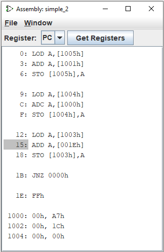

Просмотр кода ассемблера
Окно «Просмотр кода ассемблера» отображает значение адреса, хранящееся в регистре текущей схемы, вместе с соответствующей инструкцией на языке ассемблера по этому адресу.

Всякий раз, когда значение, хранящееся в регистре, изменяется, новый адрес выделяется в окне «Просмотр кода ассемблера».
Выберите регистр для отображения и загрузите текстовый файл, содержащий инструкции на языке ассемблера.
Имя файла должно иметь расширение .lss. Пример текстового файла:
0: LOD A,[1005h]
3: ADD A,[1001h]
6: STO [1005h],A
9: LOD A,[1004h]
C: ADC A,[1000h]
F: STO [1004h],A
12: LOD A,[1003h]
15: ADD A,[001Eh]
18: STO [1003h],A
1B: JNZ 0000h
1E: FFh
1000: 00h, A7h
1002: 00h, 1Ch
1004: 00h, 00h
Адреса инструкций в текстовом файле записываются в шестнадцатеричной системе счисления без ведущих нулей, перед адресом должен быть как минимум один пробел в начале строки, после адреса следует двоеточие и инструкция на языке ассемблера.
Нажатие клавиши F2 в окне просмотра кода ассемблера продвигает тактовый сигнал на два такта.